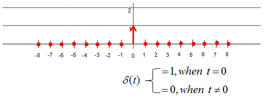
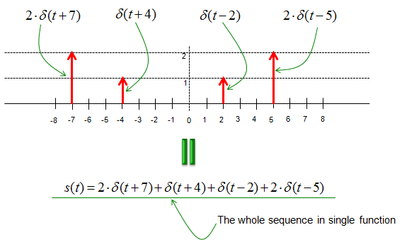
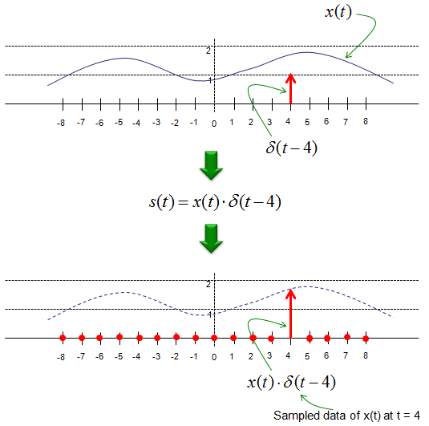
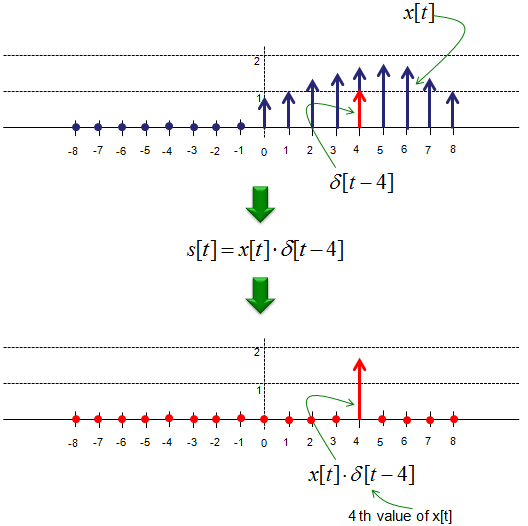
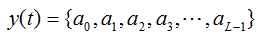
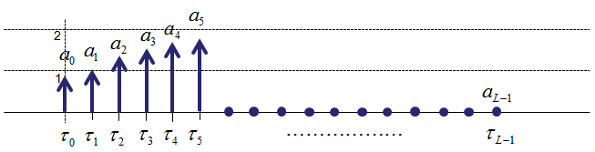
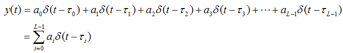
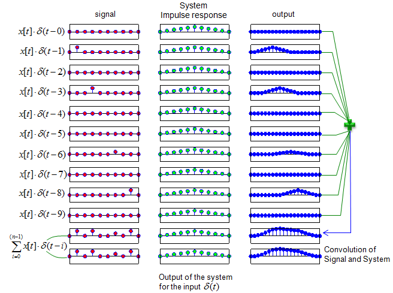

|
Communication - Signal Representation Home : www.sharetechnote.com |
|
As in any other field, we also use mathematical notations to represent a signal whether you like it or not -:). You should be familiar with this kind of mathematical representation since most of technical documents (especially text books) use the same expression.
The most important component of signal representation is to understand the meaning of 'delta' fuction. Delta function in discrete signal can be illustrated as below. As you see, delta function is a special function which has '1' only at t = 0 and '0' at all other points. (In case of continuous signal, Delta function is defined as a function where the width of the function is infenitely small and the area under the function is 1).

Why do we use this kind of special function ? It is because we can represent any discrete value by shift and multiplication of the function as shown below. (Note : In order for this kind of shift and multiplication to have practical meaning in real application, the system should be LTI (Linear Time Invariant). See Linearity and Time Invariance page.) If you sum up all of these shift-multiplied versions of delta function, you can even express a sequence of signal in simple mathematical form. If you want to express the following sequence without using the delta function, you may have to write s(t,x) = {(-8,0),(-7,2),(-6,0),(-5,0),(-4,1),(-3,0),(-2,0),(-1,0),(0,0),(1,0),(2,1),(3,0),(4,0),(5,2),(6,0),(7,0),(8,0)}. You would notice that it is simple to express it in the mathematical form. Another reason why we use delta function for signal representation is the fact that the characteristics of the delta function is well investigated. Therefore, we can easily identify the characteristics of the signal based on the characteristics of the delta function. (Again, this holds true that the system is Linear Time Invarient).

The delta function is also frequently used to represent 'sampling'. Let's say that we have a continuous signal x(t) and we want to express the value of x(t) sampled at t = 4. This can be respresented as shown below. I hope this make sense to you without any further explanation.

This way of representing the sampling with delta function is also applies to the discrete signal as shown below. Let's say we have a discrete signal x[t] and you want to select out the value at index 4. You can just express it as below.

This kind of mathematical expression may look unnecessarily complicated, but as I mentioned above if you can express your signal into this kind of mathematical form you can easily characterize your signal based on a simple well known signal (delta function). One common example for this is for investigation of the system output for a given input sequence.
Let's go one step further. In many reading material, you would have seen a sequence of signals represented as a sequence of mathematical symbols as shown below.

This data sequence can be represented as below.

Using the delta function concept, we can represent this sequence as a single mathematical equation as below. This is the same logic as described above, but it would make it look complicated just because it is expressed in symbols rather than numbers. It is just psychological effect -:). But you have to be familiar to this kind of symbolic expression, otherwise you would have difficulties when you read papers or textbooks about communication theory.

Here goes one example. Let's assume that you have following signal.
x[n] = [0 1 0 1 0 0 0.5 0 1 0]; and let's assume that the impulse response of the system is as follows. (By definition, impulse response is the system output for a delta input function. So this means that you already know the expected output from the system when you put a delta function as an input).
h(n) = [0 0.2 0.4 0.6 0.8 1 0.8 0.6 0.4 0.2 0];
Now, you want to predict the output from a system when you the signal as an input. What you can do is as follows : i) break down the whole input sequence x[n] into each separate component using the delta function as explained above. ii) Take the convolution of each component and the impulse response. (If you know the impulse response, you can calculate the convolution of x[t] * delta[t-n] very easily). iii) Sum up all the results for each component you get at step ii). This sum represents the system output for your sequence as a whole. Note : For this process to be true, the system should be LTI (Linear Time Invarient)

May textbook would explain the meaning of system response as illustrated above, but it would still not look easy and clear at the first look. To help you understand this concept, I put the matlab code that I used to create plots shown above. Change "x", "chan" variables as you like and see how the outcome changes. As you try this more and more, your brain would automatically draw out some general rule in your own version. (Note : You can change the value for x and chan anyway you like, but don't change the size of the array because I hardcoded the size of the array in for loop and number of subplots).
x = [0 1 0 1 0 0 0.5 0 1 0];
chan = [0 0.2 0.4 0.6 0.8 1 0.8 0.6 0.4 0.2 0]; chan = chan/max(chan);
y = conv(x,chan); ysum = zeros(1,20);
for i = 1:10 tempx=zeros(1,10); tempx(i) = x(i); tempy = conv(tempx,chan); ysum = ysum + tempy; subplot(12,3,(i-1)*3+1);stem(tempx,'MarkerFaceColor',[1 0 0]); set(gca,'xtick',[]);set(gca,'ytick',[]);axis([1 length(tempx) -1.5 1.5]); subplot(12,3,(i-1)*3+2);stem(chan,'MarkerFaceColor',[0 1 0]); set(gca,'xtick',[]);set(gca,'ytick',[]);axis([1 length(chan) -1.5 1.5]); subplot(12,3,(i-1)*3+3);stem(tempy,'MarkerFaceColor',[0 0 1]); set(gca,'xtick',[]);set(gca,'ytick',[]);axis([1 length(tempy) -1.5 1.5]); end;
subplot(12,3,31);stem(x,'MarkerFaceColor',[1 0 0]); set(gca,'xtick',[]);set(gca,'ytick',[]);axis([1 length(x) -1.5 1.5]); subplot(12,3,32);stem(chan,'MarkerFaceColor',[0 1 0]); set(gca,'xtick',[]);set(gca,'ytick',[]);axis([1 length(chan) -1.5 1.5]); subplot(12,3,33);stem(ysum,'MarkerFaceColor',[0 0 1]); set(gca,'xtick',[]);set(gca,'ytick',[]);axis([1 length(ysum) -max(ysum) max(ysum)]);
subplot(12,3,34);stem(x,'MarkerFaceColor',[1 0 0]); set(gca,'xtick',[]);set(gca,'ytick',[]);axis([1 length(x) -1.5 1.5]); subplot(12,3,35);stem(chan,'MarkerFaceColor',[0 1 0]); set(gca,'xtick',[]);set(gca,'ytick',[]);axis([1 length(chan) -1.5 1.5]); subplot(12,3,36);stem(y,'MarkerFaceColor',[0 0 1]);set(gca,'xtick',[]); set(gca,'ytick',[]);axis([1 length(y) -max(y) max(y)]);
|